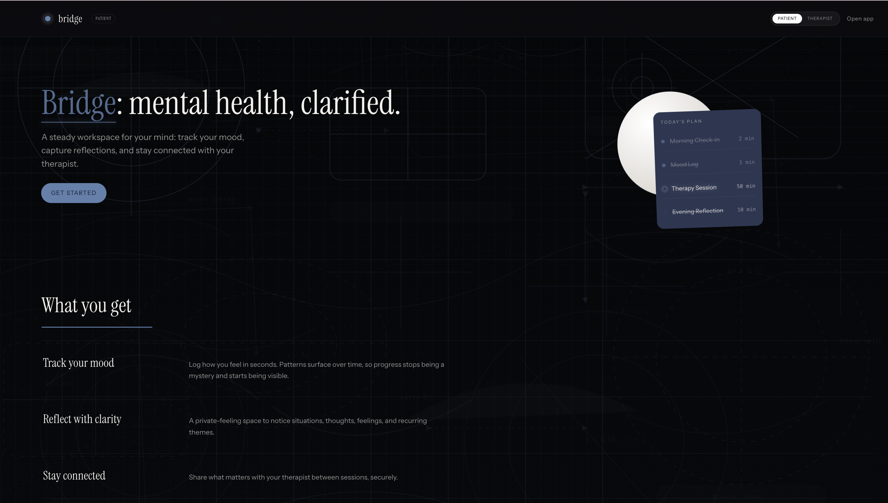
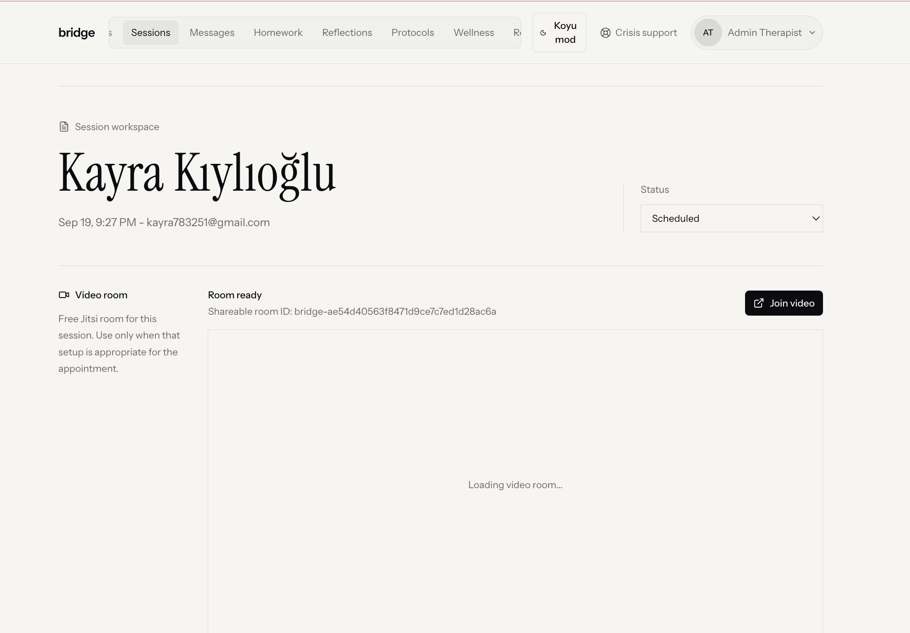
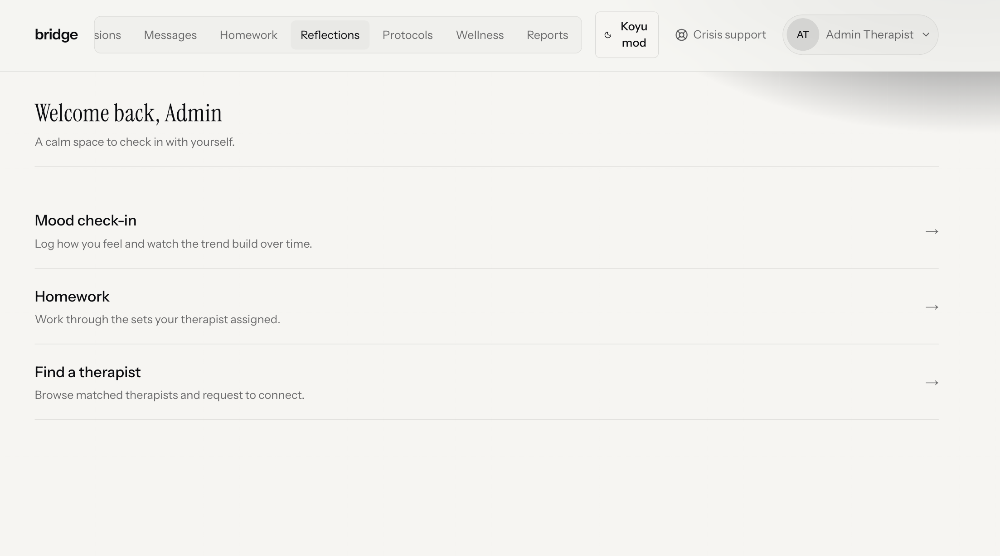
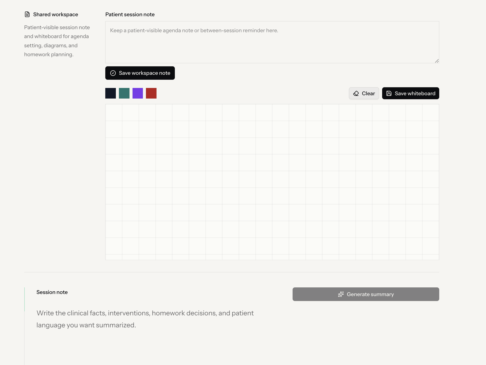
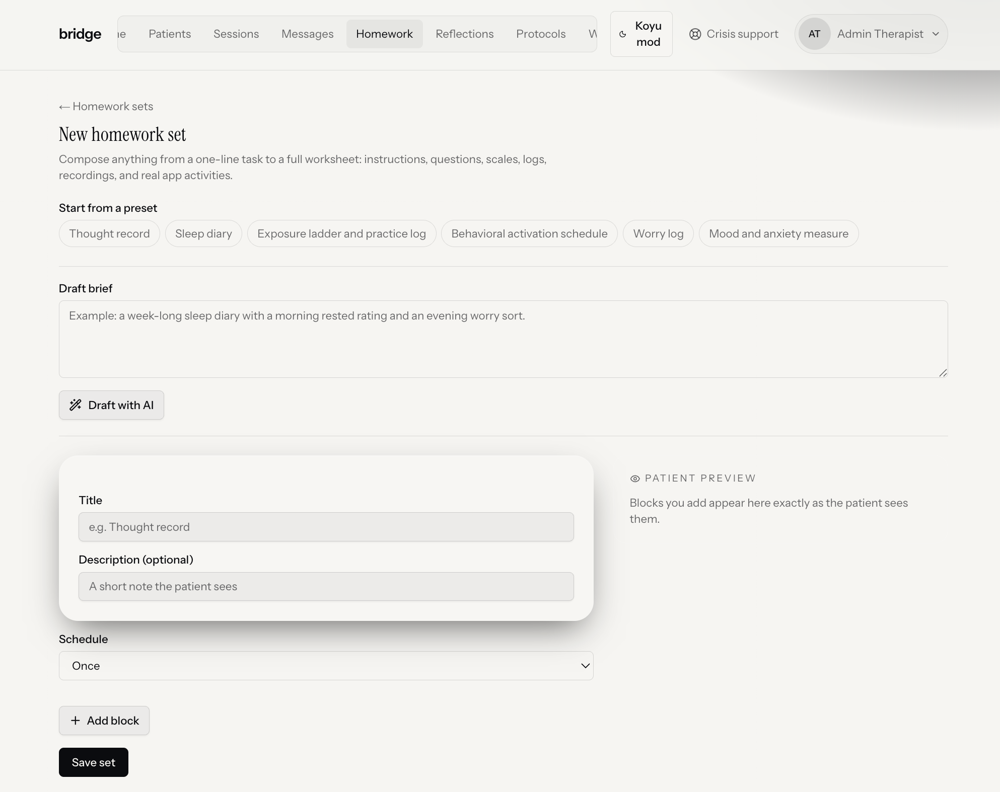
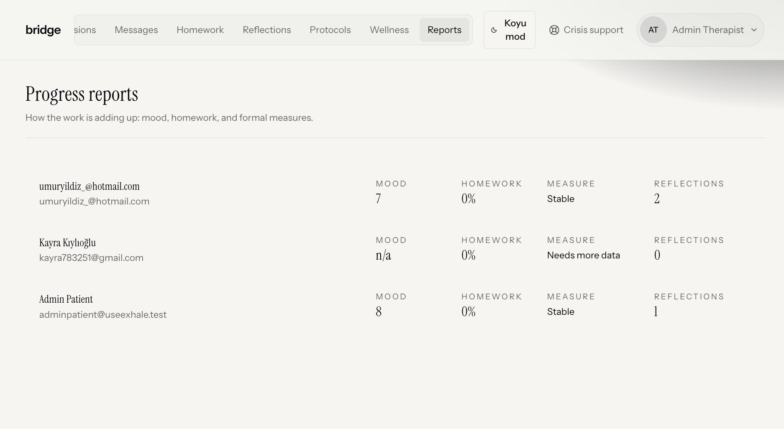
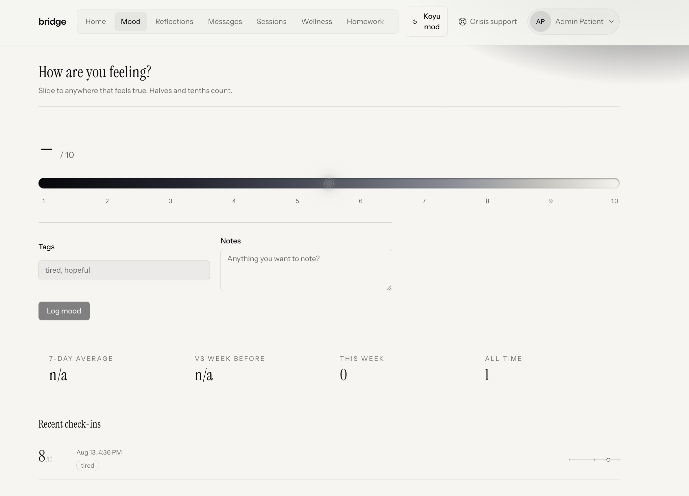
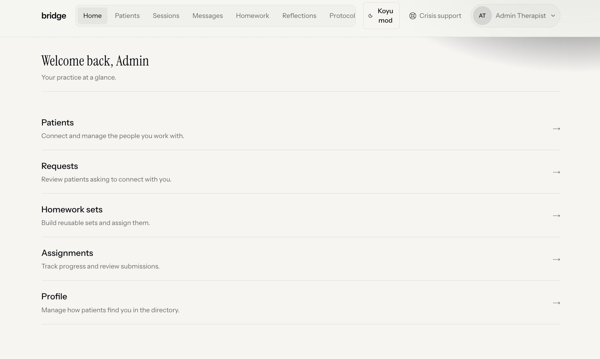
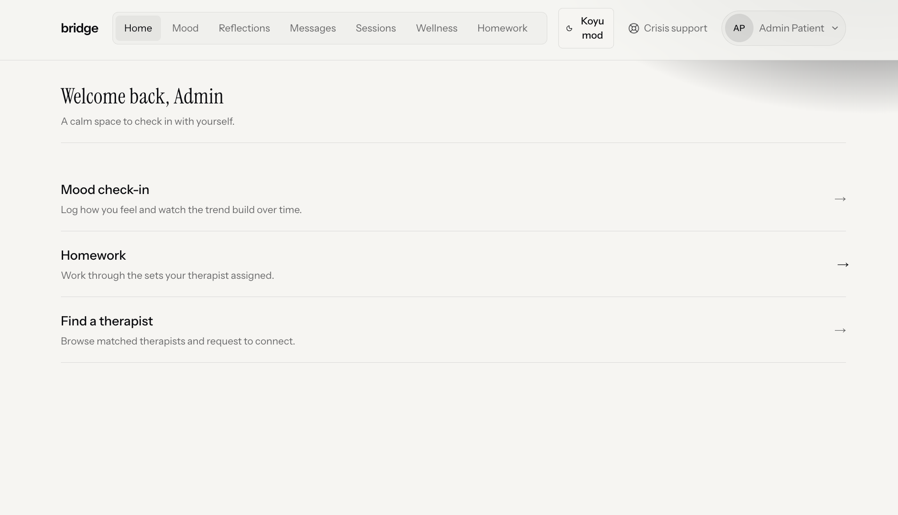

BRIDGE is an AI-supported therapist–client platform co-designed to sustain therapeutic progress between CBT sessions — built with both stakeholders, not for one of them.
See the app
Hero image — app overview screenshotCBT is typically delivered in weekly sessions, leaving clients to manage therapeutic progress alone in between. This structural gap is well-documented — and its consequences are predictable.
The single most frequent challenge reported by therapists in our needs assessment — and the one they most often attribute to the client.
Clients describe difficulty articulating their concerns, not knowing how to open the session, and losing effective therapy time as a result.
Therapists frame between-session loss as "non-adherence." Clients frame the same gap as "I couldn't remember or transfer what we discussed." Both groups are describing the same structural problem — but attributing it differently.
Feature priorities emerged from parallel surveys with 15 therapists and 20 clients. The highest-rated items converged on a shared need: keeping a record and making progress visible.
Both therapist and client can add notes during or after each session; a brief AI-generated summary preserves what was discussed. Rated 4.4 and 4.6 out of 5 by therapists and clients respectively.
Graphical tracking of symptoms and interim measures. Therapists want it for clinical decision-making; clients want it as evidence that the process is working. Same feature, different function.
AI assists the therapist in designing tailored between-session tasks — not replacing clinical judgement, but reducing the manual load. Both groups rated this above 4.0.
Lightweight daily mood logging that feeds back into the next session agenda. Clients rated this 4.2; therapists 3.7 — the gap reflecting a preference for client-initiated rather than therapist-managed tracking.
Clients rated security features higher than therapists (4.0 vs 3.5), consistent with qualitative privacy concerns — acceptance is conditional on trust in data protection.
Therapists and clients see the same platform through role-specific views. Therapists get a clinical management panel and whiteboard; clients get mood tracking and session preparation tools.
BRIDGE gives therapists and clients a collaborative space that respects the asymmetry of their roles.

Therapist dashboard
Client home screen
Session notes / AI summary
Homework assignment
Progress tracking
Mood trackingBoth groups accept AI when it operates under clinician control. When AI interfaces directly with the client as an autonomous agent, therapist support drops to neutral. BRIDGE positions AI as a tool that amplifies the therapist, not one that replaces them.

Therapist interface detail
Client interface detailBRIDGE follows the first three phases of the CeHRes Roadmap 2.0 (Kip et al., 2025), an established eHealth development framework emphasising iterative co-design with active stakeholder involvement.
Parallel surveys administered to CBT therapists (n=15) and clients (n=20), combining open-ended questions with Likert-scale ratings. Follow-up interviews with volunteer participants.
Survey and interview findings inform the design of an AI-integrated, personalisation-focused CBT support application built on stakeholder-identified priorities.
The prototype is presented to participants in iterative cycles, where structured interview feedback is used to refine the application in successive rounds.
A cross-disciplinary team at Bilkent University, Ankara.
BSC in Psychology at Bilkent University
SC in Psychology & NSC in Neuroscience at Bilkent University
Clinical Psychology Assistant Professor at Middle East Technical University
Assistant Professor at the Department of Psychology and National Magnetic Resonance Research Center(UMRAM)